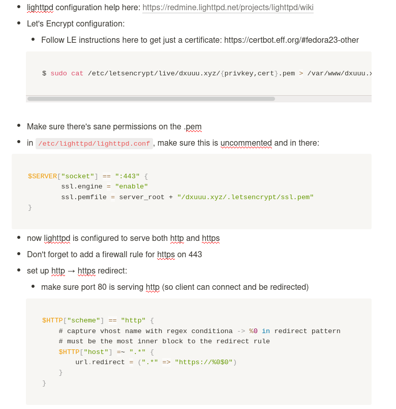

I decided to upgrade my ancient Fedora 25 VPS to Fedora 33 this weekend. I couldn’t get the in-place upgrade to work across so many releases so I just blew away the entire server and started fresh. While typing away, I remembered I had heard some good stuff about Caddy. I was also getting annoyed manually refreshing my Let’s Encrypt certs every three months for lighttpd. I figured why not give Caddy a try?
Turns out caddy is a joy compared to lighttpd. Compare my old lighttpd notes to the new caddy config:
lighttpd:

Caddyfile:
dxuuu.xyz
root * /var/www/dxuuu.xyz
file_serverAnd caddy automatically renews https certs!
One final note: I originally chose lighttpd out of resource concerns b/c I’m running this site on a $5/mo DigitalOcean droplet. A brief inspection reveals caddy is doing just fine:
[dxu@shiva ~]$ systemctl status caddy
● caddy.service - Caddy web server
Loaded: loaded (/usr/lib/systemd/system/caddy.service; enabled; vendor preset: disabled)
Active: active (running) since Sat 2021-03-20 21:53:36 UTC; 12min ago
Docs: https://caddyserver.com/docs/
Process: 6395 ExecStartPre=/usr/bin/caddy validate --config /etc/caddy/Caddyfile (code=exited, status=>
Main PID: 6401 (caddy)
Tasks: 7 (limit: 1125)
Memory: 29.1M
CPU: 227ms
CGroup: /system.slice/caddy.service
└─6401 /usr/bin/caddy run --environ --config /etc/caddy/Caddyfile